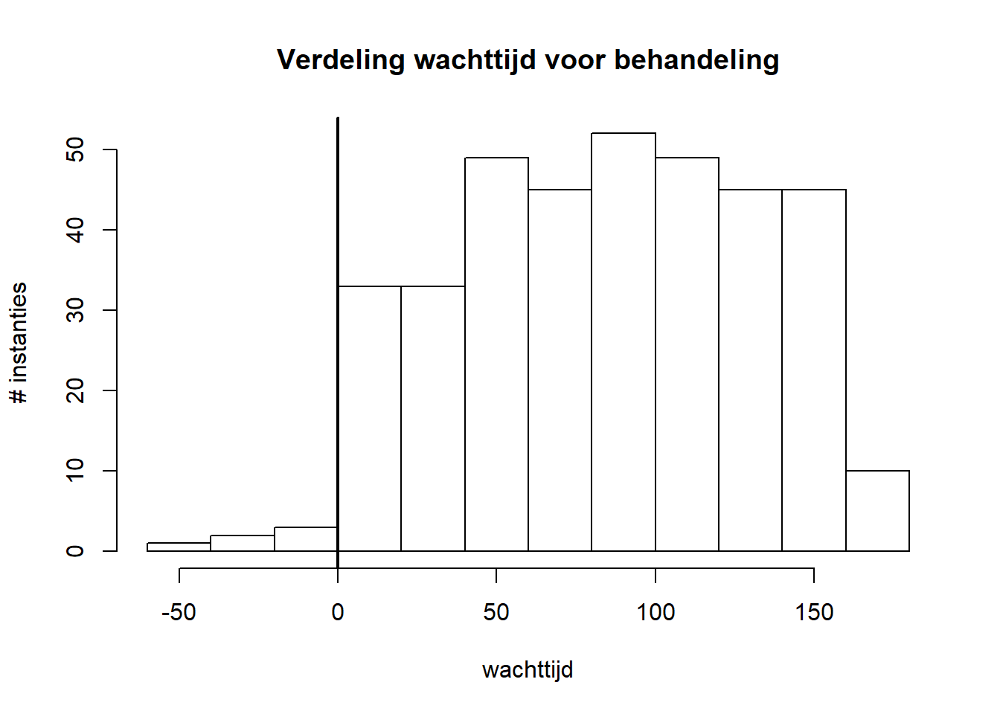
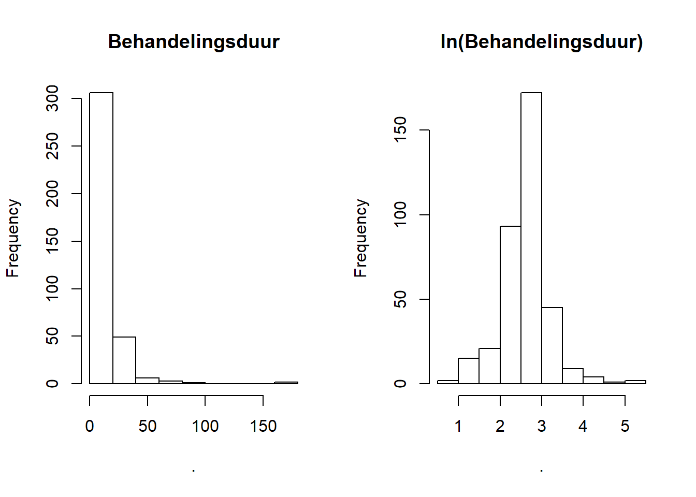

Hoofdstuk 6 Data exploratie
6.1 Principes van data exploratie
Exploratieve Data Analyse (eng: Exploratory Data Analysis; EDA) zal de datawetenschapper helpen om twee hoofddoelen te bereiken
Stelling 6.1 De twee hoofddoelen die de datawetenschapper voor ogen heeft tijden het exploreren van data zijn
- Begrijpen van de data én van processen die tot de data geleid hebben
- Controleren dat de dataset in zijn geheel maar ook elke variabele afzonderlijk aan een aantal eisen voldoet
De datawetenschapper wil tijdens het controleren van een variabele de volgende eigenschappen onderzoeken:
D uidelijkheid
Indien de betekenis van de variabele niet achterhaald kan worden, is het vaak veiliger die niet te gebruiken (heeft onder meer met data lekkage te maken)I nformatief
Indien er wel data is maar deze een te lage informatie inhoud heeftP rivacy
Indien de betrokken variabele het risico loopt om de privacy van de eindgebruiker te schenden volgens de opgestelde Privacy Impact Assessment (PIA) of volgens de Vlaamse of Federale wetgeving, dan mag je deze variabele simpelweg niet ontsluitenK waliteit
Indien om technische redenen de data niet bruikbaar zou zijn. Voorbeeld: te moeilijk om de data te ontrekken (bij bijv. vrije tekst), onvoldoende resolutie (bij metingen of afbeeldingen), té complex data type (bijv. circulaire), …E thiek
Het onderwijs is niet immuun voor stereotypering op basis van geslacht, afkomst, leeftijd, enz…. Het trainen met tendentieuze data leidt tot een tendentieus algoritme. Om dit te voorkomen laat je best variabelen weg die mogelijk wel een zeker voorspellend vermogen hebben maar die de vooringenomenheid uit het verleden zou bevestigen. In dit geval rapporteer je waarom je die variabele niet wenst te gebruiken, zelfs als zou de wet het toelaten.V oorradig
Indien méér dan ±30% ontbreekt (NULL, NA, "", -1, …), kunnen vele leeralgortimen de data niet gebruikenE chtheid
Indien de data weinig betrouwbaar lijken in de zin dat ze vermoedelijk geen goede weerspiegeling zijn van de realiteit, i.e. ofwel vermoedelijk inaccurate data of niet representatief (bijv. slechts geldig voor beperkte subset)R elevantie
Indien gegeven de doelstelling van het onderzoek er geen goede verantwoording (technisch noch functioneel) gevonden kan worden waarom deze variabele zou worden opgenomen (naar alle belanghebben zoals opdrachtgever en eindgebruiker algoritme), dan kan je deze ook beter niet gebruiken
6.2 Stappen in data exploratie
Elke exploratie is anders en iedereen heeft zo zijn eigen methode, maar als leidraad kan je deze stappen volgen:
- Zorg eerst dat je zo veel mogelijk begrijpt van de data nog vóór je in detail in de variabelen begint te duiken. Lees het codeboek of andere omschrijvingen. Vraag indien mogelijk hulp van iemand die al wel op de hoogte is
- Controleer of er tabellen, rijen of kolommen zijn die je niet nodig hebt voor jouw analyse en filter de overbodige data desgevallend weg zodat je hier ook geen tijd mee hoeft in te steken
- Begrijp wat één instantie (rij) hier precies voor staat en controleer of het aantal rijen dan ook logisch is
- Controleer nu pas de overblijvende data variabele-per-variabele
- Lees de omschrijving van de variabele en kijk naar een samenvatting of een willekeurige steekproef van de variabele
- Loop de DIPKEVER criteria één voor één af
- Beslis op basis hiervan of je de variabele wenst te houden (eng: keep) of te verwerpen (eng: drop)
- Maak korte notities
- Kijk naar de paarsgewijze correlaties (eng: pair-wise correlations) onder de variabelen
6.3 Voorbeeld data exploratie
We gaan dit doen aan de hand van een voorbeeld (in R). Je kan de Markdown code van deze cursus downloaden en meevolgen door de codeblokken één voor één uit te voeren.
Vraag: Sommige mensen zeggen dat er steeds méér terrorisme is in de wereld. Andere zeggen dat er altijd al terrorisme heeft bestaan. Wie heeft er gelijk?
Antwoord: Via de bovenstaande link naar de standaard datasets vinden we twee datasets met het woordje “terrorism” in de titel. Ééntje heeft 206 rijen (nkill.byCountryYr), laten we die eens van naderbij bekijken:
Zorg er eerst voor dat je deze pakketten installeert (eenmalig) via install.packages of via de Packages-tab in RStudio. Als alles goed verlopen is, krijg je de documentatie te zien:

We onderzoeken nu de documentatie en vinden dat de databank wel erg relevant en professioneel lijkt, maar niet zo up-to-date (1970 - 2015). Toch beslissen we om door te gaan met deze dataset. We lezen dat er eigenlijk drie datasets zijn, telkens met hun eigen structuur:
terrorism: Jaartal × {verscheidene aantallen per type aanslag, locatie (wereld versus VS) en type slachtoffers}
incidents.byCountryYr: Aantal aanslagen per {Land × Jaartal}
nkill.byCountryYr: Aantal slachtoffers per {Land × Jaartal}
Hierop lanceren we de vraag:
Vraag terug: met ‘méér terrorisme’, bedoel je méér aanslagen of méér slachtoffers
Stel dat de opdrachtgever het volgende antwoord geeft:
Antwoord terug: méér aanslagen
We kunnen nu zowel de eerste als de tweede gebruiken. We kiezen de eerste omdat daarin meer informatie vervat zit. We hebben die extra informatie nu niet nodig, maar misschien later wel. Één instantie (een rij) komt overeen met een jaartal. We zien onmiddellijk dat we de volgende variabelen nodig hebben uit de terrorism dataset:
year: het jaar waarin de aanslag werd gepleegd, als natuurlijk getal, uniek voor elke rijincidents: het aantal aanslagen voor dat jaar wereldwijd
We overlopen de DIPKEVER criteria. De data zijn duidelijk en informatief. Ze lijken de privacy van niemand te schenden omdat het om geaggregeerde gegevens gaat, wereldwijd en telkens samengevat voor een heel kalenderjaar.
Kwaliteit. We beginnen met de controle dat het jaartal en de incidenten als natuurlijke getallen worden behandeld.
## year incidents
## "numeric" "numeric"numeric datatype in R stellen de reële getallen voor, niet natuurlijke getallen. Dat is geen ramp, natuurlijk, omdat \(\mathbb{N}\subset\mathbb{R}\) maar kan soms problemen geven, laten we dit rechtzetten:
dat[, year := year %>% as.integer]
dat[, incidents := incidents %>% as.integer]
dat %>% apply(2, class)## year incidents
## "integer" "integer"Nu controleren we of het jaartal inderdaad loopt van 1970 tot en met 2015:
## Min. 1st Qu. Median Mean 3rd Qu. Max.
## 1970 1981 1992 1992 2004 2015en we kunnen ook nakijken of het jaartal uniek is:
## [1] FALSEDe incidenten zijn ook natuurlijke getallen, maar van een andere soort dan het jaartal. De incidenten zijn namelijk ook aantallen en dit heeft heel wat statistische consequenties. Het betekent onder meer dat we voor deze variabele een histogram kunnen genereren:
dat$incidents %>%
hist(main = "Verdeling aantal aanslagen", xlab = "# aanslagen per jaar",
ylab = "Frequentie")
Hierin zien we dat er in het totaal meer dan 30 jaren zijn met minder dan 5000 aanslagen per jaar wereldwijd en dat er 3 jaren zijn met meer dan 10 000 aanslagen.
Dit was de K van DIPKEVER, we zetten onze tocht voort. Over ethiek: voor velen is dit natuurlijk een gevoelig onderwerp maar het weergeven van de aantallen aanslagen kan moeilijk als aanstootgevend worden gezien. Bovendien worden hier nog geen voorspellingen gemaakt, dus dat lijkt in orde. Er ontbreken geen data (dus voorradig). Het consortium rond de Studie van Terrorisme en Responsen op Terrorisme (START) is verantwoordelijk voor de data en gezien hun staat van dienst en academische publicaties waaronder sommige in in gerenommeerde tijdschriften, lijken ze op het eerste gezicht betrouwbaar (cfr. Echtheid). Tenslotte zijn de data ongetwijfeld relevant en daarmee slagen ze voor de volledige DIPKEVER test. Het onderlinge correleren van beide variabelen biedt hier geen meerwaarde.
De exploratiefase is voorbij. Het volstaat ons nu om een grafiek op stellen waarbij het aantal aanslagen in de tijd wordt gevolgd:
dat <- dat[order(year)]
void <- dat[, plot(incidents ~ year, type = "l",
main = "Verloop aantal aanslagen wereldwijd",
xlab = "Kalenderjaar", ylab = "Aantal aanslagen per jaar")]
Conclusie: Ja, het aantal gerapporteerde terroristische aanslagen lijkt volgens de START (Pape et al. (2014)) toegenomen te zijn in de periode 2010 - 2015 ten opzichte van de periode 1970 - 2010.
6.4 Univariate verdelingen
We zagen net hoe je met een eenvoudige opdracht een histogram kunt opstellen voor een variabele. Het histogram, geïntroduceerd in de paragraaf rond Soorten variabelen, geeft de verdeling weer van de waarden van één variabele (univariaat, eng: univariate) langsheen de meetschaal van de variabele. Dat is cruciale informatie. Één blik op de verdeling geeft antwoord op de volgende vragen:
- Wat is het datatype?
- Lijkt het een gekende theoretische verdeling te volgen?
- Heeft een duidelijke modus, meerdere modi?
- Lijkt het erop dat de data een natuurlijke oorsprong kennen of is de data mogelijk gemanipuleerd?
- Wat is de resolutie van de meting?
- Lijken er limieten te zijn waartussen de waarden zich bevinden
We beginnen met het laden van de dataset en het tonen van de interne structuur (str) van het object dat de data bevat
## 'data.frame': 767 obs. of 8 variables:
## $ id : int 1 2 3 4 5 6 7 8 9 10 ...
## $ inst : int 1 1 1 1 1 1 1 1 2 2 ...
## $ trt : int 1 1 0 1 0 1 0 0 1 0 ...
## $ entry.dt: Date, format: "1992-03-20" "1992-03-24" "1992-03-24" "1992-03-26" ...
## $ end.dt : Date, format: "1992-09-04" "1992-09-09" "1992-09-08" "1992-09-10" ...
## $ fev : num 28.8 64 67.2 57.6 57.6 25.6 86.4 32 86.4 28.8 ...
## $ ivstart : num NA NA 65 NA NA NA NA 90 NA 8 ...
## $ ivstop : num NA NA 75 NA NA NA NA 104 NA 22 ...We gaan nu één voor één de variabelen af:
id: subject id. Is de identiteit en het heeft geen nut om hier een verdeling van de trekken.inst: enrolling institution. Dit is eeninteger, dus dat lijkt niet te kloppen, want we verwachten een organisatie hier. We behandelen het dan ook als categorische (nominale) variabele (factorin R) en maken een staafdiagram (eng: bar plot). Er is geen betekenisvolle sortering mogelijk bij categorische variabelen, maar het is een goed gewoonte om te toch even van frequent naar minder frequent te sorteren om een zicht te krijgen om de curve die zo ontstaat.
rhDNase <- rhDNase %>% as.data.table
rhDNase[, inst := inst %>% factor]
rhDNase$inst %>% table %>% sort %>% rev %>%
barplot(xlab = "Enrolling institution", ylab = "# of instances",
main = "Distribution of the institutions", cex.names = .6, las = 2)
Er zijn wel een aantal dominantere instituten maar die dominantie lijkt niet te extreem er blijft een goede verdeling tussen de verschillende instituten van grofweg 10-15 instanties per instituut.
- trt treatment arm: 0=placebo, 1= rhDNase Een arm betekent hier een vertakking van de beslissingsboom die gebruikt wordt om patiënten in een bepaalde categorie te plaatsen. Zulke een binaire kan je evengoed met een staafdiagram voorstellen, maar hier heb je duidelijk een controle experiment (de placebo-arm) en volstaat het om de verhouding behandeld/placebo mee te geven omdat alle informatie van de verdeling hierin vervat zit:
## [1] "48.8%"Dit ligt héél dicht bij 50% en we kunnen dus zeggen dat de groepen mooi gebalanceerd zijn zoals het hoort
- entry.dt: date of entry into the study. Uit de structuur zagen we al dat het formaat correct in ingesteld als datum. Een datum is in theorie een continue variabele omdat er tussen twee willekeurig gekozen tijdstippen oneindig veel nieuwe tijdstippen liggen. Bovendien heeft een datum geen betekenisvol nulpunt. Voor een continue variabele is een densiteit-diagram beter geschikt dan een histogram:
rhDNase[, entry.dt.num := entry.dt %>% as.numeric]
rhDNase$entry.dt.num %>% density %>%
plot(xaxt = "n", main = "Distribution of start dates ", xlab = "")
axis(1, las = 2, cex = .8,
at = rhDNase$entry.dt %>% pretty,
labels = rhDNase$entry.dt %>% pretty)
rhDNase$entry.dt.num %>% rug
Hier zien we dat de rekrutering van deelnemers voor de klinische studie na één maand op een laag pitje te hebben gestaan pas goed op gang is gekomen. De densiteit laat twee pieken zien (modi), we spreken van een bimodale verdeling.
- end.dt: date of last follow-up. Is sterk gelijkend op het vorige. Laten we deze feature gebruiken om de loopduur van elke instantie te berekenen en de distributie hiervan in grafiek te zetten (zie Oefening 6.1).
ivstartenivstopdays from enrollment to the start of IV antibiotics en days from enrollment to the cessation of IV antibiotics (IV staat voor intraveneus) Deze laatste twee variabelen zijn weer verschillend: het gaat om discrete aantallen (\(\subset \mathbb{N}\)), dus geen kommagetallen, maar, tegen de verwachting, wél negatief kunnen zijn. Bovendien zijn er erg veel ontbrekende waarden:
## [1] NA NA 65 NA NA NA NA 90 NA 8 63 60 83 50 NA 99 35 71 NA 8 NA NA NA 20 62 85
## [27] NA 13 51 166 37 65## .
## FALSE TRUE
## 367 400We kunnen zelfs zeggen dat er voor ivstart meer gaten zijn dan kaas. We kunnen alsnog de verdeling onderzoeken van de overblijvende waarden:
rhDNase$ivstart %>% hist(
main = "Verdeling wachttijd voor behandeling",
xlab = "wachttijd", ylab = "# instanties")
abline(v = 0, lwd = 2)
We zien een verdeling die eerder uniform is dan wel normaal. Ook hier kunnen we nu de verdeling van de behandelingsduur in grafiek zetten:
par(mfrow = 1:2)
rhDNase[, ivstop - ivstart] %>%
hist (main = "Behandelingsduur")
rhDNase[, ivstop - ivstart] %>% log %>%
hist(main = "ln(Behandelingsduur)")
De eerste grafiek laat zien dat de behandelingsduur nogal rechtsscheef verdeeld is. De transformatie door middel van de natuurlijke logaritme (\(ln(x)=\,^elog(x)\)) veranderd de verdeling in iets wat normaler lijkt. We zeggen dat de behandelingsduur lognormaal verdeeld lijkt te zijn. Laten we de theoretische curve erbij zetten om de afwijkingen tussen werkelijk en theoretisch te visualiseren:
bduur_log <- rhDNase[, log(ivstop - ivstart)]
bduur_log <- bduur_log[!is.na(bduur_log) & !is.infinite(bduur_log)]
bduur_log %>% hist(main = "ln(Behandelingsduur)", freq = FALSE, n = 20)
x <- (1:60 / 10)
y <- x %>% dnorm(
mean = bduur_log %>% mean,
sd = bduur_log %>% sd)
lines(x, y , col = 1, lwd = 3)
We kunnen verdelingen ook met andere grafiek-types in beeld brengen. De meest populaire zijn de boxplot, de {dot plot}(https://en.wikipedia.org/wiki/Dot_plot_(statistics)), de beeswarm plot en de violin plot.
Oefening 6.2 Tracht de verdeling van de logaritmisch geschaalde behandelingsduur te visualiseren door middel van de functies base::dotchart, base::boxplot, beeswarm::beeswarm en vioplot::vioplot. De oplossing moet er zo uit zien:
Eindresultaat grafieftypes
Tip: Als je meer dan 300 characters nodig hebt, weet je dat je te ver aan het zoeken bent.
Opgelet: de variabele bduur_log wordt voor deze oefening verwacht in scope te zijn.
library(beeswarm)
library(vioplot)
par(mfrow = c(2, 2), pch = 19, mar = rep(1, 4), xaxt = "n")
bduur_log %>% dotchart(pch = 19, lcolor = NA)
bduur_log %>% boxplot(horizontal = TRUE)
bduur_log %>% beeswarm(horizontal = TRUE)
bduur_log %>% vioplot(horizontal = TRUE)
6.5 Correlatie tussen twee variabelen
Om correlatie te begrijpen simuleren we een bivariate verdeling met verschillende covariantie-matrices (zie figuur 6.1).
library(MASS)
library(latex2exp)
copula <- function(n, rho, mu1, mu2, sd1, sd2){
mu <- c(mu1,mu2)
sigma <- matrix(c(sd1 ^ 2, sd1 * sd2 * rho, sd1 * sd2 * rho, sd2 ^ 2),2)
mvrnorm(n, mu, sigma) %>% as.data.table
}
par(mfrow = c(2, 2), mar = c(2, 3, 2, 1))
for(rho in c(.05, .33, .66, .95)){
dat <- copula(1000, rho, 0, 0, 1, 1)
dat %>% plot (xlab = "", ylab = "", pch = 19, cex = .7,
xlim = c(-3, 3), ylim = c(-3, 3))
text(-2.5, 2.7, TeX(sprintf("$\\rho = %.2f$", rho)))
text(2, -2.7, TeX(sprintf("$\\hat{\\rho} = %.4f$",
dat %>% cor %>% extract(1, 2))))
}Figuur 6.1: Demonstratie van de correlatie tussen twee variabelen. Merk op hoe de geschatte correlatie coëfficiënt de werkelijke benaderd. De covariantie matrix komt overeen met \[\begin{bmatrix}1 & \rho\\\rho & 1\end{bmatrix}\]
Remark Opgelet: een correlatie tussen twee variabelen is geen garantie voor een causaal verband. Bekijk deze kennis-clip om te begrijpen hoe je wel een causaal verband kan onderzoeken:
References
Pape, R., Ruby, K., Bauer, V., Jenkins, G., 2014. How to fix the flaws in the global terrorism database and why it matters. The Washington Post.